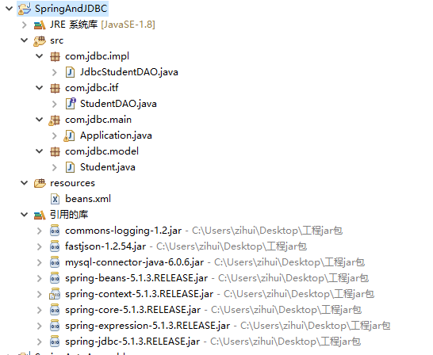
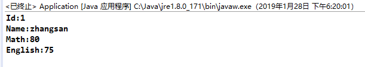

Spring通过JDBC连接MySQL数据库并进行增删改查的操作
首先我们在自己的MySQL数据库中建一张学生成绩表，做为我们的测试用例。
1 | CREATE TABLE `students` ( |
随便向里面插入一条数据
1 | INSERT INTO students ('name', 'math', 'english') values ('zhangsan', '80', '75'); |
接下来开始新建我们的实例项目，先看看项目目录结构

注意，必要的jar包不要少了
首先对应我们建的学生成绩表新建一个学生成绩模型
1 | package com.jdbc.model; |
新建成绩查询的接口，并具体实现它
1 | package com.jdbc.itf; |
1 | package com.jdbc.impl; |
我们注意到，在实现类的开始定义了一个 DataSource 类型的变量 data_source ，用来连接我们的数据库。那么 data_source 具体定义的是什么呢？这个需要我们通过Spring的xml文件向其注入属性。
新建xml文件
mysql数据库的ip地址和账号密码请修改为自己的
1 |
|
功能实现
一切准备好了，那么我们通过一个主文件来运行它
1 | package com.jdbc.main; |
结果显示：

以上例子仅仅是查询的，那么下面的例子是对增删该查的总体汇总。
首先在接口中把剩余的方法补充上
1 | package com.jdbc.itf; |
在接口实现类中实现它们
1 | package com.jdbc.impl; |
updateByStudentId方法实现对数据的修改不是最优的，后续会对它进行进一步的优化